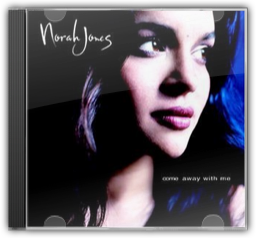
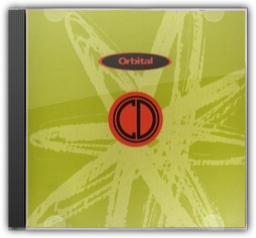
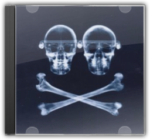
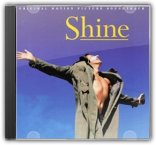
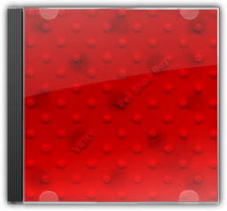
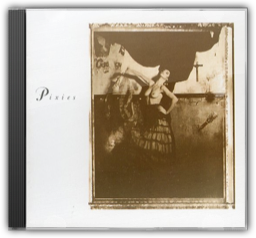
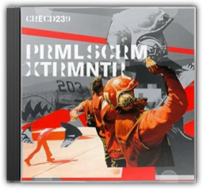
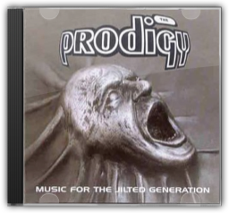

|

Come Away with Me
Norah
Jones

In Come Away with Me, it is not just the timbre of Norah Jones's voice that is mature beyond her years. Her assured phrasing and precise time are more often found in older singers as well. She is instantly recognisable, blending intimations of Billie Holiday and Nina Simone without sounding like anyone but herself. Any way you slice it, she is a singer to be reckoned with. Her readings of the Hank Williams classic, "Cold Cold Heart" and Hoagy Carmichael's "The Nearness of You" are worth the price of the CD. Jones's own material, while not bad, pales a bit next to masterpieces such as these. They might have fared better had she and producer Arif Mardin opted for some livelier arrangements, taking better advantage of brilliant sidemen such as Bill Frisell, Kevin Breit and Brian Blade; or if the tunes had simply been given less laconic performances. Jones has all the tools; what will come with experience, and some careful listening to artists like JJ Cale and Shirley Horn, is the knack of remaining low-key without being sleepy—sometimes less is not, in fact, more. —Michael Ross

Orbital
Orbital
In the late 1980s, as American house and techno imports flooded Britain and the Acid House movement was sweeping the nation, brothers Paul and Phil Hartnoll were busy building Britain's own interpretation of the sound. Named for the illegal "Orbital" raves taking place around the M25, they dragged their equipment from party to party, playing live PAs of their homegrown dance music to enthusiastic crowds of revellers. Their 1990 single "Chime" was (and still is) the anthem of many a British raver, and their self-titled 1991 debut remains a classic. Opening with the exquisite mid-tempo anthem "Belfast", and containing the "Chime", "Satan", and "Fahrenheit 303" singles, this album captures the innocence and energy of the nascent rave scene. —Matthew Corwine 
Having outgrown the happy house of the green and brown albums and exploited narrative far too complex for ambient techno, the Hartnoll brothers—Phil and Paul really do find themselves in some Eastern adventure in The Middle of Nowhere. Thus they prove again that they are the most reliable innovators in danceable electronic composition. The inchoate political rage of 1994's "Snivilisation" is here, but it has found purely instrumental claws that are unafraid to dig for new melodies. "Know Where to Run" gathers itself from some beastly buzzing weather to become a dance-floor creature lurching through the village at night like some urban nightmare and "I Don't Know You People" turns the dance floor into an escapist fantasyland once more with its grousing refrain, "nothing changes—goddamn you!" The highly evolved vocal softness of "Autumn" and the weirdly Tangerine Dream-gone-hip-hop "Style" keep a trip-hop story line seamlessly borne out on jungle and electro beats. Nowhere comprises a portrait of boom-boom techno that carjacks beats once lost in space to whole new worlds where breakthrough songwriting is an aesthetic ideal. The UK act who forced the sales charts fully into the postrock 90s is now realising the participatory promise of rock & roll liberation in the dance clubs, where music lives now. —Dean Kuipers

The Altogether
Orbital
During their long reign as one of dance music's most endearing acts, the Orbital sound has rarely changed. The result: five albums of beautiful electronic space-symphonies, blunt dancefloor beats and eccentric cinematic themes. And so to album six, 2001's The Altogether. From the start, it's clear that this is no ordinary Orbital album. Gone are the space-opuses of old, replaced by rock-sampling instrumentals, what can be described as "techno skiffle" numbers and David Gray collaborations. Of the 11 tracks here, three are punk-sampling breakbeat romps (think 1996 hit Satan), two are full-on vocal numbers and one's a breakneck drum-and-bass tune about rioting (the Scott Walker-inspired Meltdown). Sure, all the familiar elements are here—tracks such as "Pay Per View", "Doctor Who" and "Shadows" are classic Orbital—but they're no longer the most dominant themes. While fans may find The Altogetheruncomfortable listening at first, it's easily the Hartnolls' most varied album to date. Within its 60 minutes lies some of the duo's most inventive and enjoyable music in years. This is a real mixed bag, for sure, but one that demands repeat listens. —Matt Anniss 
The Back to Mineseries has already brought us some very memorable compilations from a diverse collection of dance luminaries, including Morcheeba, MJ Cole, Groove Armada, Faithless, Nick Warren and Talvin Singh. Now it's the turn of famous brothers-in-rhythm Paul and Phil Hartnoll, aka Orbital, to offer a selection of the tunes that lie close to their hearts and get their heads bopping. Their effort is indulgently deep and impressively broad, and is certainly one of the series' most eclectic offerings yet. Starting with John Barry and His Orchestra's "The Knack", we are taken through a weird and wonderful selection of tastes and styles, leaping from soundtrack to ska, rave to reggae, industrial to psychedelic, punk to pop. The intensely wide range of sounds means that the LP doesn't flow quite as mellifluously as it might, but with songs by Lee Scratch Perry ("Justice to the People"), The Tornadoes ("Love and Fury"), PJ Harvey ("Kamikaze"), The Selecter ("Celebrate the Bullet"), Earth Leakage Trip ("No Idea"), Jethro Tull ("Living in the Past") and Plaid ("New Bass Hippo"), it's still an enjoyable, sprawling and educational album that manages to pull together a disparate but relevant bunch of pre, post and present dance tunes. —Paul Sullivan |

Hirschfelder - Shine-film score
Original Soundtrack
A film about classical music and mental illness would normally be a box-office disaster. Yet such was the life-affirming brilliance of director Scott Hicks Shine, the true story of Australian pianist David Helfgott's battle against mental breakdown and his self-expression through Rachmaninov's Piano Concerto No. 3, that the film found an adoring audience. Composer David Hirschfelder faced the extraordinarily difficult task of crafting a score of sufficient maturity to stand beside some of the greatest classical masterpieces ever written. Had he failed the film itself could not have worked, yet work it did, and triumphantly so. This soundtrack album features 34 tracks, 14 by Hirschfelder, the remainder bring his arrangements of the classical selections used in the film. Necessarily, the resulting album is somewhat diverse and even fragmented. Despite this, Hirschfelder has done a remarkable job of assembling the pieces into a musical tapestry, in which his own delicately understated compositions sit comfortably besides Vivaldi, Beethoven and, of course, Rachmaninov, with David Helfgott himself playing on many of the tracks. Shinemade the actor Geoffrey Rush an overnight star, going on to roles in Shakespeare in Loveand Elizabeth—the latter eliciting another fine score from Hirschfelder. —Gary S. Dalkin

Very
Pet Shop Boys
Ask people what their favorite Pet Shop Boys album is, and their answers will vary—but ask people what the most important Pet Shop Boys album is, and 9 out of 10 West End girls will say Very. The snide ambiguities that churned behind prior PSB posturings were ripped away on this release, with Neil Tennant and Chris Lowe finally pulling more than punches. Self-awareness is one of the major themes on Very, with "Yesterday When I Was Mad," showing the band could send up themselves as well as their friends and lovers; meanwhile, "I Wouldn't Normally Do This Type of Thing" both carries one of the Boys' best melody lines and serves as one of their most literal confessions. There's also a more threatening, foreboding tone to the record as set by the opening "Can You Forgive Her" and the closing Village People cover, "Go West." Originally an anthem leading gay men to San Francisco's promised land, the Pet Shop Boys' version is delivered from the beleaguered trenches in the war against AIDS. The results are as ominous as they are brilliant. —Steve Gdula

Surfer Rosa & Come on Pilgrim
Pixies
Before the Breeders and Frank Black, there was this Massachusetts quartet, playing hardcore's rush and terseness against the acoustic grit and the minor-key flourish of Latin pop. Their first full-length album is their starkest, harsh and trebly, with the drums right in your face and songs edited to eliminate any note that's not absolutely necessary. Singer Black Francis yelps away about destroyed bodies and the river Euphrates, alternately acting cryptic and crazed. Kim Deal, then calling herself "Mrs. John Murphy", contributes the highlight, "Gigantic", a creepy anthem about childhood voyeurism. The playing is snarly and tricky but unfailingly tuneful, and the hooks come out of nowhere—hiding behind the noise—and bite down hard. —Douglas Wolk

Xtrmntr
Primal Scream
It's seldom that a band's sixth album is their best, but Exterminatoris nothing less than a radical new dawn. Only a few years before, Primal Scream seemed spent—a smack-addled joke, numbing the pain with the idle comfort of rock & roll cliché. Exterminatoris the Scream's baptism of fire—an album with a righteous social conscience, it rages against apathy and injustice with all the funk-fuelled indignation of Sly & The Family Stone's There's A Riot Goin' On. Musically, too, Exterminatoris shackled together with a coherence that's eluded them since 1991. From the tense industrial trance of "Swastika Eyes", to the scurvy-thin hip-hop of "Pills" and the exultant Krautrock of "Shoot Speed Kill Light", one minute the 'Scream are diseased and desperate, the next they're basking in glorious, righteous euphoria. Thank the guests, certainly—the Chemical Brothers, New Order's Bernard Sumner, My Bloody Valentine's Kevin Shields—but when you hear Bobby Gillespie screaming "from here to where?", on the hyper-distorted pedal-to-the-metal drag-race of "Accelerator", you'll know he's the one with the road map to a terrific rock & roll future. —Louis Pattison

Music for the Jilted Generation
The Prodigy
Crawling out of the end of the rave scene, the Prodigy's second album went straight in at number one in the charts. All the tracks have the unique stamp of Liam Howlett and the boys, from the hypnotic atmosphere of aggression and attitude on "Poison" and "Voodoo People" to the guitar-driven "Their Law" (featuring the now defunct Pop Will Eat Itself) and the breakbeat tech-house of "No Good (Start the Dance)". One of the few dance acts to retain underground credibility and huge mainstream popularity, Music For The Jilted Generationshows The Prodigy at their best. Any modern music collection seems barren without its presence. —Ed Potton |

Liam Clancy
Collection Total:
1389 Items
1389 Items
Last Updated:
Oct 4, 2009
Oct 4, 2009

 Made with Delicious Library
Made with Delicious Library